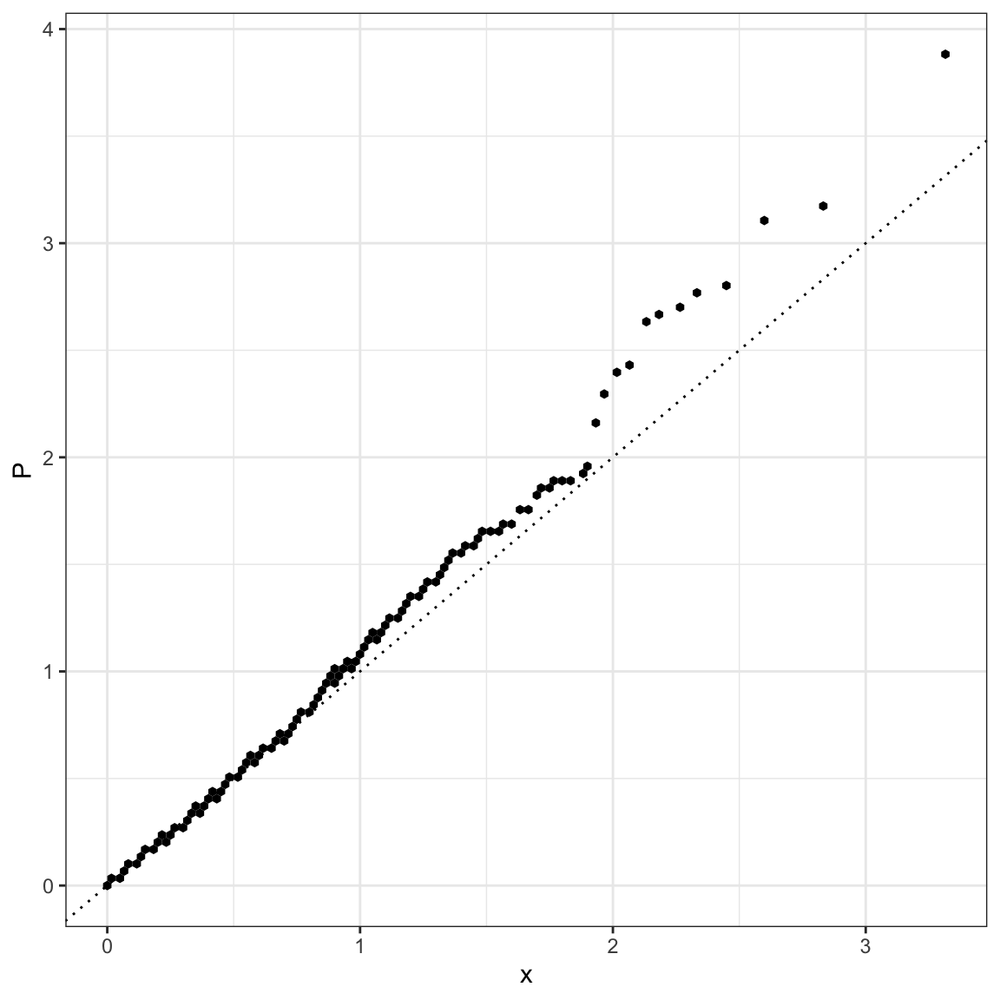
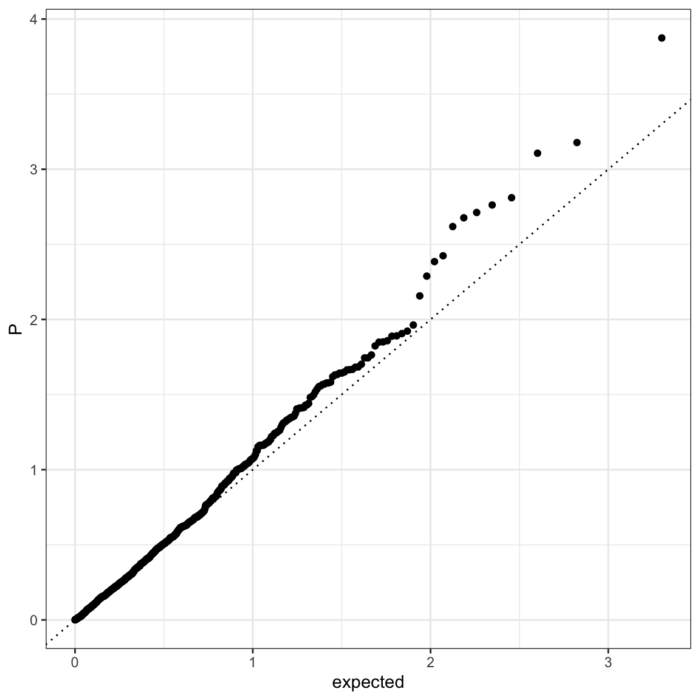
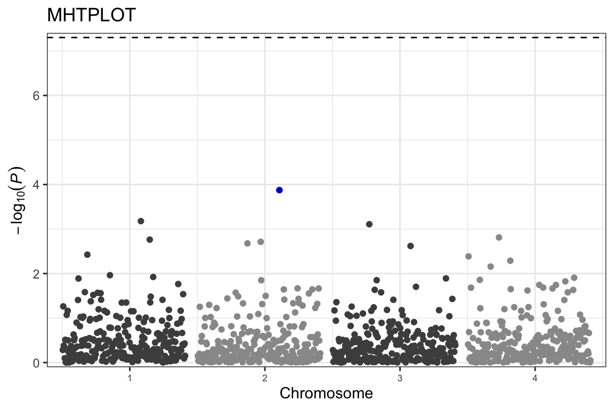

An R-Package (work-in-progress) that contains ggplot2-extensions of data visualisations used with GWAS data.
Mainly, these are Q-Q plot and Manhattan plot that both use P-values from GWASs as input.
An inspiration for ggGWAS has been the R-package qqman, except that ggGWAS aims to have the look and functionality of ggplot2.
Installation
You can install the development version from GitHub with:
# install.packages("remotes")
remotes::install_github("sinarueeger/ggGWAS")Install the devb ranch:
remotes::install_github("sinarueeger/ggGWAS", ref = "dev")Install including vignettes:
remotes::install_github("sinarueeger/ggGWAS", build = TRUE, build_opts = c("--no-resave-data", "--no-manual"))
vignette("gggwas-reasoning")
vignette("gggwas-internals")Basic usage
library(ggGWAS)
library(ggplot2)
#> Warning: package 'ggplot2' was built under R version 3.5.2
theme_set(theme_bw())
## Generate some random data
n <- 1000
n_chr <- 4
df <-
data.frame(
POS = rep(1:(n/n_chr), n_chr),
CHR = rep(1:n_chr, rep(n/n_chr, n_chr)),
SNP = paste0("rs", 1:n),
P = runif(n),
GWAS = sample(c("a", "b"), n, replace = TRUE)
)Q-Q plot
Lightweight Q-Q plot (with hex tiles)
library(ggGWAS)
ggplot(data = df) +
stat_gwas_qq_hex(aes(y = P)) +
geom_abline(intercept = 0, slope = 1, linetype = 3)
Conventional Q-Q plot
ggplot(data = df) +
stat_gwas_qq(aes(y = P)) +
geom_abline(intercept = 0, slope = 1, linetype = 3)
Manhattan plot
Currently working on stat_gwas_manhattan() that should at one point look like this:
ggplot(data = df) + stat_gwas_manhattan(aes(pos = POS, y = -log10(P), chr = CHR))Till then, use the ggman::ggmanhattan function:
library(dplyr)
library(ggman)
ggman::ggmanhattan(data = df, SNP = "SNP", chr = "CHR", bp = "POS", P = "P", sparsify = FALSE, theme_base = theme_bw(), build = 'hg18', highlight = df %>% slice(which.min(P)) %>% pull(SNP)) +
labs(title = "MHTPLOT" )
##Contributing lease note that the ‘ggGWAS’ project is released with a Contributor Code of Conduct. By contributing to this project, you agree to abide by its terms.